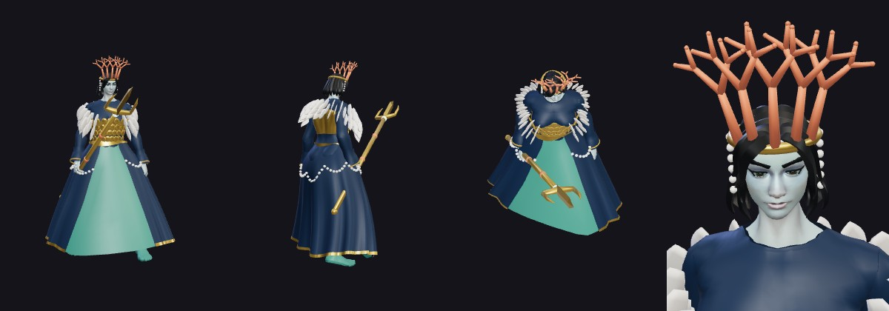
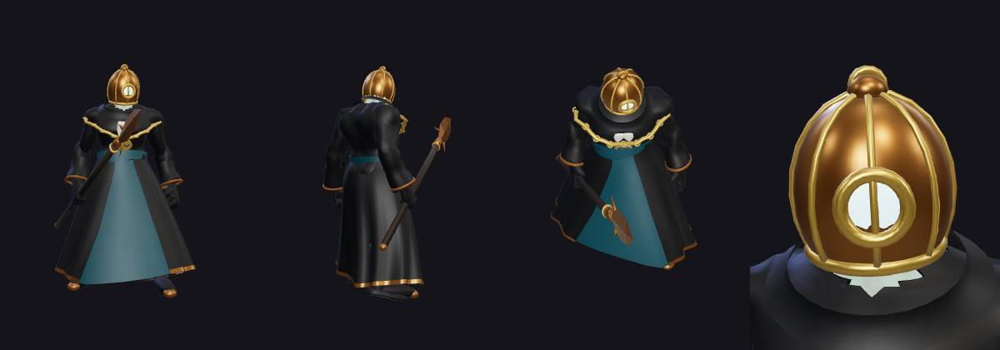
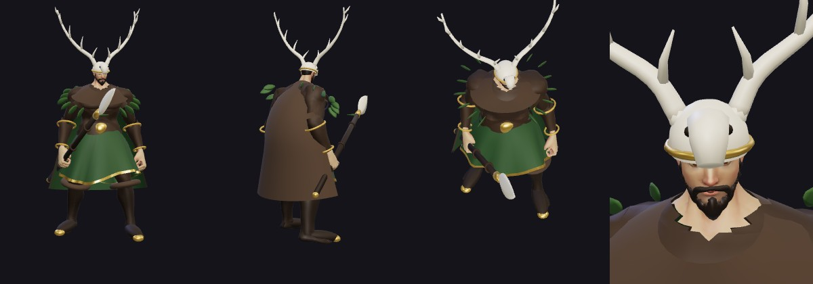
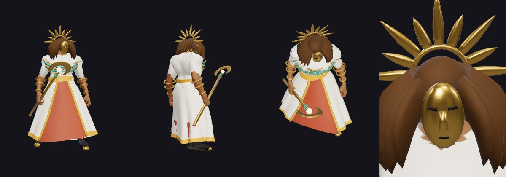
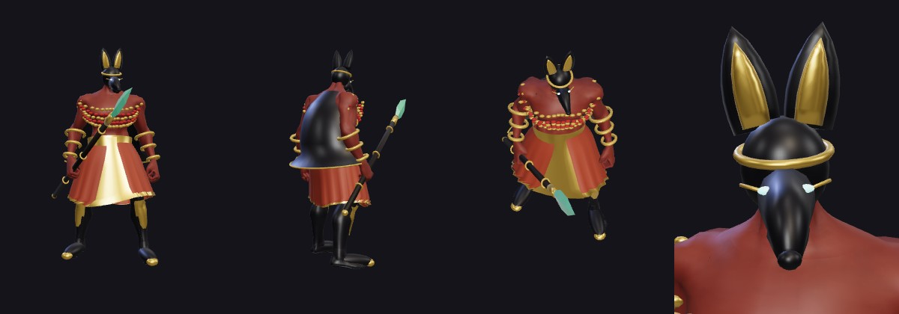
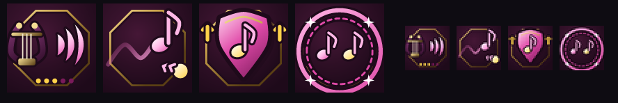
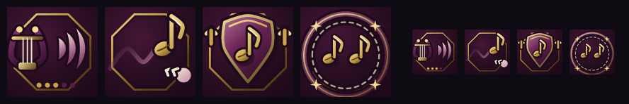
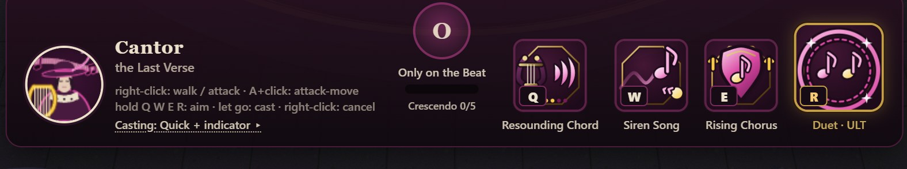
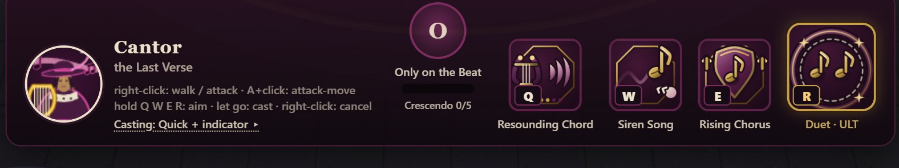
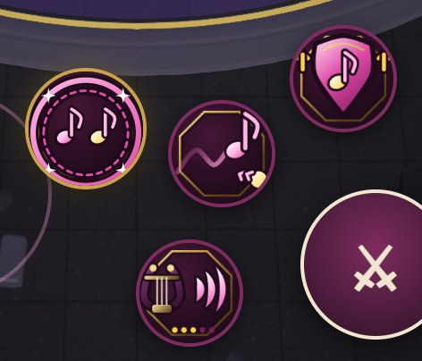

Lore changes, 16 November
You said "you decide" on the Climb's open list. The parent decided that the lore changes, not the floors and not the models. This page shows what changed in the lore and why. The lore is LORE.md, the Codex, and the Codex pages in the game.
Why
The Climb reviews found the lore saying one thing and the game showing another, in three places:
- The gates. The Codex said Opaline holds the Deep's gate and Oblivion holds the War's. On the floors they hold only the first gate of their chapter. Other heroes hold the gates above (floor 32 Pip, 33 Mortis, 42 Sirix, 43 Nyx...).
- The rulers. The ruler models you accepted on 15 November are all people. The Codex still described many of them as beasts or things: a bell, a great fish, a root, a bog, a giant beetle, a sphinx, a glass serpent, a crystal. The Pearl Tyrant was a man in the Codex but is drawn as a crowned woman.
- The named women. The game called Mother Kelp, the Dune Mother, Grandmother Thorn and the other named women "it".
The models and floors stay as you accepted them. The lore now matches them. Every event in the story still happens. Only how the rulers look and what they are has changed.
The gates
The Climb chapter's gate is held by the Tower's echo of a hero of that realm: Marin, Fenna, Sefu, Opaline, and Oblivion at the War.
Those five hold their chapter's first gate, at the end of its handmade first floor. The gates of the floors above are held by champions the Tower drew to its gates: echoes of anyone who has fought in the Ring, from any realm. The Tower collects worlds, and it sets its keepers where it wants them, "as a collector fills a shelf with what it has". So a climber in the Sands may find a gate held by a Gloaming knight or a Coast dancer.
Changed in LORE.md, the canon, the Climb's pages, the five heroes' pages and legends, the Moot's and the loners' pages, and chapter 6 of the story. Oblivion is now "the only one of the five first gatekeepers who is not of the realm it guards".
The rulers, before and after
Each picture shows the ruler's figure in its own colours. On most floors the game draws it with that floor's tint and a different size.
The Sea
The Pearl Tyrant floor 6

A pearl merchant. He drowned holding the strongbox.
The same merchant, a woman. She drowned holding the strongbox, and the Tower keeps her as she went down: a crown of red coral, a gown of deep blue and sea-green, the pearls she never sold. The Pale Diver serves her still.
The Bell Below floor 7 and the Lantern Leviathan floor 8

The Bell Below was the harbour's old cracked bell, ringing underwater. The Lantern Leviathan was a great fish with a lantern on its head.
The Bell Below is the old bell's ringer. He went into the sea with the bell and wears it as his brass helm, a long glaive in his hands. In the story Campana strikes the bell on his head, and after the end he gives it to her to carry home. The Lantern Leviathan is a deep-sea diver who went down after the great fish. The light burns in his helm's window, and the Coast folk gave him the fish's name.
The Wood
The Elder Root floor 11 and the Hollow Elder floor 15

The Elder Root was a trunk too wide to see round. The Hollow Elder was the oldest walking tree.
The Elder Root is still the oak Fenna planted at twelve. The Tower gave it the shape of an old man: crowned with its roots, roots spreading from his hem, its glowing core in the head of his staff. Fenna still knows it, Hank still cuts its roots, and after the end it walks out and becomes a tree again. The Hollow Elder is the oldest of the Moot's elders, hollowed by lightning, with a light inside him that is not a fire.
The Lantern Root floor 17 and the Grey Oak floor 18

A root that grew an amber lantern, and a dead oak that walks.
The Lantern Root is a huntsman who lured the lost into the dark with an amber light until the roots took him. The Grey Oak kept the Moot's oath-tree. When it died he took its name: its bleached branches stand on his brow like antlers, its bark on his shoulders like a shield. He would not fall, so he walks.
The Mire Heart floor 19

A bog at the Wood's lowest point.
A bog-witch who drowned in her own mire the night the Wood woke, and came up with the bog's heart beating in her. She swallows what walks across it.
The Sands
The Scarab Colossus 21, the Scarab King 22, the Dune Colossus 23

A beetle the size of a house, its son, and a giant of sand and stone.
The Scarab Colossus is a queen of the old Sands, a giantess sealed in the sacred beetle's shell. The helm hides her face, so she stays the Scarab King's mother. The Scarab King is her son, in the same shell. The Dune Colossus is the first king's giant guard of the Brass Road.
The Brass Sphinx floor 24

A lion of brass with a woman's face.
The riddle-keeper of a buried city's gate, behind a brass mask with a woman's calm face, a lion's mane and a crown of sun rays. Her riddle and Ramet's story stay the same.
The Glass Serpent floor 25

A serpent of lightning glass.
A raider of the Flats who walked out of the glass the sun's heat made of the sand. He wears the raiders' black mask with tall gold-lined ears, his spear is tipped with that lightning glass, and his people named him for the serpent he strikes like.
The Deep
The Prism Mother 31 and Mother of Echoes 35

A crystal the size of a hall, and a voice in the galleries.
The Prism Mother kept the far halls' greatest crystal. When the others went out, its light went into her. She is still "what the Deep's light becomes with nowhere to go". Mother of Echoes called down the galleries for her lost crew until her voice was all they kept of her.
The Drowned Lantern floor 39

A lamp that fell into the black water.
A lamplighter who fell into the black water with his lamp and kept it burning under it. He walks out of it hooded, a ring of silver caging his face, the lamp on his staff.
The War
All the War's rulers were already people. One small mismatch is left for you: the War Drummer (48) is "a drummer boy" in the lore, but the Siege Lord's horned giant draws him. Either he grew in the Tower, or another figure. Your call.
The words in the game
The named women are "her". The keeper's lines said "Fell it ... while it does" of every named enemy. Now any name with Mother, Grandmother, Widow, Bess, Annie or Bride gets "her" and "she": Mother Kelp, the Brine Widow, Barnacle Bess, the Bark Widow, Grandmother Thorn, the Dune Mother, the Glass Widow, Mother Mirage, the Sun Widow, Mother Seam, Quartz Annie, the Ore Bride, Widow Cobble, the Mud Mother, the Iron Widow, Mother Crow. That changed 21 lines on 19 floors. Beasts and things stay "it".
The rulers who became people. The Wood's keeper now says "him" for the Hollow Elder, the Lantern Root and the Grey Oak, and "her" for the Mire Heart (floors 15, 17, 18, 19). Six boss titles said "It": they now say "He rings the sea in", "He drinks the light", "Her heart beats under the moss", "Never where he stands", "He runs the wadi", "He swallowed noon once". The hint in each ruler fight follows too: "Cut the roots that feed her; she stands open..." on the Wood's floors, "He goes under the sand..." on the Sands' (She for the Brass Sphinx and the Scarab Colossus). These changes are separate commits, so they can be undone on their own.
Still "it", and left for you: the named men (Sir Rust, Sir Ashes, Captain Candle, Brother Flint, Cinder Jack...) and the Elder Root on floor 11 ("cut the roots that feed it"). The oak is still an oak in the lore, so "it" is right there.
Also in this batch
- A won ruler now leaves the hero standing in front of its door, not back at the last waystone. A lost fight works as before.
- Cantor's spell icons are redrawn with engraved gold notes (below). Also on batch 5 and the overview.
Cantor's icons, before and after
His pink notes were the nearest of the forty to cartoon. The notes are now engraved gold, and the song, the shield and the ring are plum lacquer with a gold edge. Each row shows the four icons large, then at 32 px.

Before

After

The spell bar, before

The spell bar, after

On a phone, before
On a phone, after